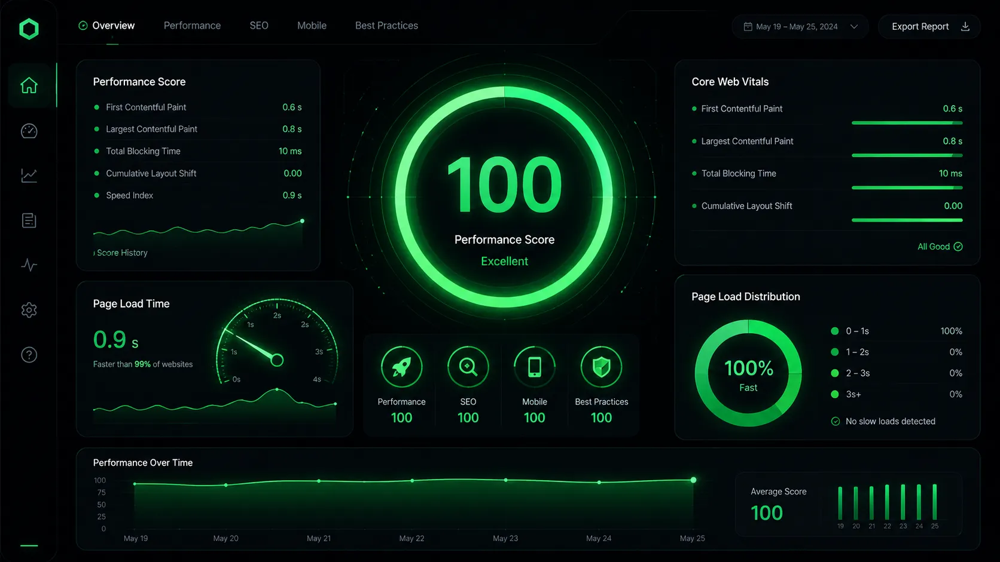
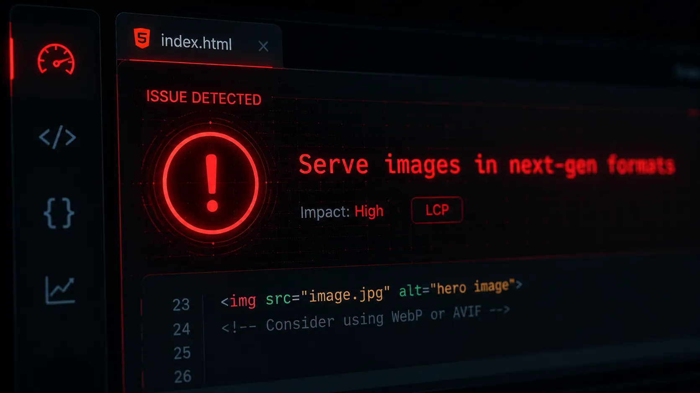

In 2026, Search Engine Optimization (SEO) is a highly technical discipline. It is no longer just about scattering relevant keywords into your articles and building external backlinks. Today, technical performance is a confirmed, heavily weighted ranking factor in Google's complex algorithm.
If you want to climb to the top of the search results, your website must be lightning fast. And since images usually make up the vast majority of a webpage's weight, optimizing them is your quickest path to better rankings. This is where the WebP format, and tools like Webp Moder by Shekh, become your secret weapons.

How WebP Directly Impacts Your Google Rankings
You might be wondering: does Google actually care about what format my image is saved in? The short answer is yes, immensely. Here is the technical breakdown of how WebP influences your SEO strategy.
- Improving Your Core Web Vitals (LCP) Google evaluates user experience using a rigorous set of metrics known as Core Web Vitals. The most prominent metric regarding visual media is the Largest Contentful Paint (LCP). LCP measures how quickly the main content of your page (often a hero image or banner) renders on the user's screen. Because WebP images are significantly smaller than JPEGs, they download faster, helping you achieve the coveted "Good" status (under 2.5 seconds) for LCP.
- Reducing High Bounce Rates Google uses mobile-first indexing. They judge your site's quality based entirely on how it performs on a mobile phone (often on slower 3G/4G networks). Heavy PNGs will cause your site to stall, leading frustrated users to hit the "Back" button—a metric known as a bounce rate. WebP ensures your mobile experience remains snappy, keeping users on your page and sending positive engagement signals to search engines.
- Following Google's Own Directives If you run a slow website through the Google PageSpeed Insights tool, you will almost certainly be hit with a specific, red-flag warning: "Serve images in next-gen formats." Since Google developed the WebP format themselves, playing by their rules and adopting their proprietary format is the safest way to ensure algorithm favorability.

"Speed equals revenue. For every 1 second of improvement in page load time, conversions increase by up to 7%. Image optimization is the easiest way to capture that speed."
The Compound Effect on Server Crawlability
There is a hidden SEO benefit to WebP that many webmasters overlook: Crawl Budget Optimization.
Googlebot allocates a specific amount of time and resources to crawl your website (your crawl budget). If your server is bogged down transmitting massive 5MB JPEG files, Googlebot will crawl fewer pages on your site before leaving. By using a WebP converter to shrink those files to 500KB, your server responds faster, allowing Googlebot to crawl and index more of your deep content in the same amount of time.

Ready to Boost Your SEO Rankings?
Don't let unoptimized, heavy media files drag your Core Web Vitals down. Convert your assets safely, instantly, and for free today.
⚡ Optimize Images for SEOFrequently Asked Questions
Does renaming a .jpg to .webp work for SEO?
No! Simply changing the text of the file extension does not change the internal compression algorithm. Google will still see it as a heavy JPEG. You must use a legitimate converter tool to re-encode the file properly.
Will WebP ruin my image alt tags?
Not at all. The alt="" attribute lives in your HTML code, not inside the image file itself. You can (and should) continue writing highly descriptive, keyword-rich alt tags for your new WebP images.
Is WebP better for SEO than SVG?
They serve different purposes. SVG is best for simple vector logos and icons, while WebP is best for complex photographs and detailed graphics. Use both appropriately for perfect SEO.
Conclusion
In the highly competitive landscape of search engine rankings, ignoring image optimization is no longer an option. Transitioning your visual media to the WebP format is a straightforward, technical update that yields massive dividends in page speed, user retention, and organic traffic. Start utilizing Webp Moder by Shekh today, and give your website the SEO advantage it deserves.